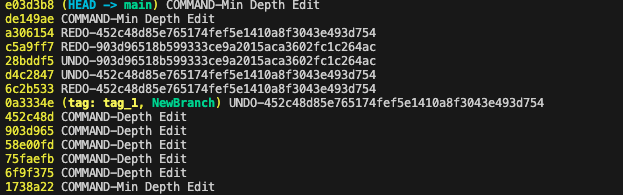

Interactive Widgets
mom6_forge has three notebook widgets:
GridSketcherbuilds a horizontal grid (Grid) from an outline sketched on a map.TopoEditoredits a bathymetry (Topo) cell by cell.VGridCreatorbuilds a vertical grid (VGrid) and keeps a library of saved ones.
from mom6_forge.widgets import GridSketcher, TopoEditor, VGridCreator
Each widget is a front end over ordinary mom6_forge calls. It does nothing you
could not do in Python, and what it builds is an ordinary object: the sketcher’s
grid is sketch.grid, the editor changes the Topo you give it, and the
creator’s grid is creator.vgrid. The Interactive editors notebook
shows the editor and the creator, and GridSketcher: a conformal regional grid from a sketched outline the
sketcher.
Where the widgets run
The widgets are anywidgets with plain JavaScript front
ends. They run in JupyterLab, Jupyter Notebook 7, VS Code, Google Colab and
marimo. Installing mom6_forge installs anywidget; nothing else is needed (no
%matplotlib ipympl).
NCAR’s JupyterHub. The Hub’s JupyterLab server runs from NCAR’s own
environment, which does not include anywidget’s browser side, so the widgets do
not appear. Install it once for your user, with the same anywidget version as
your mom6_forge environment (the browser side only loads widgets of a matching
version). In a terminal with that environment active:
pip install --user "anywidget==$(python -c 'import anywidget; print(anywidget.__version__)')"
Then restart your server (File > Hub Control Panel > Stop My Server, then start it again). Alternatively, ask CISL to add anywidget to the Hub environment.
Errors show inside the widget, in a red box. If something goes wrong in the
browser, the error is also kept in Python as widget.js_errors; the traceback of
the last Python error is widget.last_traceback. Include them when you report a
problem.
GridSketcher
GridSketcher builds an orthogonal (conformal) regional Grid from a sketched
outline and four chosen corners, so the domain boundary can follow an irregular
coastline instead of straight lon/lat or projected edges.
from mom6_forge.widgets import GridSketcher
sketch = GridSketcher(resolution_km=10)
sketch
With no outline it starts from a box off California (the CrocoDash tutorial
domain). GridSketcher(grid) reopens a grid: exactly the outline it was built
from if it has one (grids built by the sketcher or by Grid.from_outline keep it
as grid.outline), or else its edge traced with per_side vertices a side, as
in GridSketcher(grid, per_side=4).
The map loads OpenLayers and proj4 from cdn.jsdelivr.net, so the browser needs
internet access. Land and coastlines come from Natural Earth, through cartopy.
The map
The map is drawn in the projection the grid is solved in, so an edge that is straight on the screen is straight for the solver too.
Drag a vertex to move it, or drag an edge to add a vertex there.
Right-click (or Alt-click) a vertex to delete it.
Double-click a vertex to make or unmake it a corner. A grid needs 4 corners, numbered 1–4 on the map; corners that are too flat (over 170°) are ringed in red.
Clear empties the map: click points, then click the first one again to close the outline. With 4 points, all 4 become corners.
Draw box, then drag on the map, for a new 4-corner box. It is straight in the map’s projection.
Scroll to zoom and drag the map to pan; Zoom to outline shows the whole outline again.
Every edit is solved again at a coarse preview resolution. Preview grid lines turn orange or red where ocean cells are badly shaped (orthogonality, size jump or aspect ratio); land cells are not judged.
The panel
Undo and Redo step through outline edits.
Projection picks the conformal projection the grid is solved in: Lambert conformal, Mercator, transverse Mercator or polar stereographic. The pressed button is the one in use. The one ringed in green is recommended, since its cells vary least in size; a new sketch, and each newly drawn outline, uses it until you press another. Either way the projection is centred on the outline after each edit.
Resolution sets the nominal cell size in km and shows the
nx × nyit gives.Build grid solves at full resolution and sets
sketch.grid, aGridwith.outline, ready forTopo(and CrocoDash’sCase). Save writes it toGridLibrary/grid_<name>.nc; tick Overwrite to replace a saved grid of the same name. Reopen it withGridSketcher(Grid.from_supergrid_file(path)). Any later edit, projection or resolution change dropssketch.griduntil the next Build grid.Errors say why Build grid is greyed out: fewer than 4 corners, crossing edges, a failed solve, folded ocean cells or more than 2.4 million cells (over 4 GB to build: use
Grid.from_outlinein a job with more memory). Warnings list what to check, such as abrupt size changes, non-orthogonal or stretched cells, nearly flat corners and small open boundaries along the coast. Each is one line and counts ocean cells only.Preview gives the preview grid’s size and quality; Details has the full diagnostics table.
Once the grid has a bathymetry, TopoEditor’s Show open boundaries shows
where its open boundaries are (see below).
Without the widget
Grid.from_outline is the same solve. Give it an outline (at least 4 vertices,
in degrees) and its 4 corner indices ([0, 1, 2, 3] by default for a 4-vertex
outline), and either resolution_km (nominal cell size) or n_cells (target
nx * ny). projection is a kind name ("lcc", "merc", "tmerc",
"stere") or "auto" (the default), which picks the kind the widget
recommends:
from mom6_forge.grid import Grid
lon, lat = [235.0, 243.0, 243.0, 235.0], [31.0, 31.0, 39.0, 39.0]
grid = Grid.from_outline(lon, lat, resolution_km=10)
grid = Grid.from_outline(lon, lat, resolution_km=10, projection="lcc")
A longer outline needs its 4 corners, e.g.
Grid.from_outline(sketch.outline.lon, sketch.outline.lat, sketch.outline.corners).
write_supergrid_file stores the grid’s .outline in the file, and
Grid.from_supergrid_file reads it back.
Once bathymetry exists, get the same quality numbers over the true wet cells:
from mom6_forge import corner_diagnostics as diag
limits = diag.timestep_limits(grid, wet=topo.tmask)
print(diag.warnings(limits))
Acknowledgements
GridSketcher and Grid.from_outline are by Dan Amrhein (#149). They build on
earlier ocean-grid tools:
gridgen (Pavel Sakov) and pygridgen (Rob Hetland, Paul Hobson and contributors): orthogonal grids from a polygon with marked corners, mapped conformally onto a rectangle. They use the Schwarz-Christoffel CRDT method of Driscoll and Vavasis (1998); mom6_forge solves Laplace problems with finite elements instead.
pyroms (Frederic Castruccio, Kate Hedstrom and contributors): its interactive boundary editor is the model for sketching an outline and marking its corners.
Coastlines and land come from Natural Earth (public domain), through cartopy.
The code was written with AI assistance (Claude Code, Anthropic).
TopoEditor
TopoEditor is for fixing a bathymetry by hand: filling bays, opening or closing
straits, removing lakes and disconnected basins, and setting the minimum depth.
from mom6_forge.topo import Topo
from mom6_forge.widgets import TopoEditor
topo = Topo(grid, min_depth=10.0, git=True) # git=True keeps an edit history
topo.set_from_dataset(...) # or set_flat, Topo.from_topo_file, ...
editor = TopoEditor(topo)
editor
The editor changes topo in place (editor.topo is the same object). Write it
out with topo.write_topo_file(...) when you are done.
With git=True, every button press and every brush stroke is one step in the
edit history, which gives you undo, redo, reset, tags and branches (see
Edit history below). With git=False (the default) the editor
edits the same way, but keeps no history.
Try it in your browser
The button below starts Python in your browser (Pyodide, through JupyterLite),
installs mom6_forge and opens the editor on a small test bathymetry. Nothing
is installed on your computer, and nothing you do is kept. There is no git in
the browser, so this topo has no edit history.
The map
The map is drawn in grid-index space: one pixel per cell, i to the right and
j up. Picking a cell is exact on any grid, including rotated, curvilinear and
polar ones, where a longitude/latitude map would distort the domain or split it.
Hover over a cell to read its i, j, longitude, latitude and depth under the
map; the colour bar below gives the depth scale.
Scroll to zoom, or use the +, − and fit buttons at the corner of the map. Pan with the right mouse button, or by holding Space and dragging.
Controls
View chooses what the map shows:
depth: ocean cells coloured by depth.
mask: land and ocean only.
basinmask: each connected ocean basin in its own colour, to find lakes and basins cut off from the main ocean.
Show open boundaries draws a line just outside the grid wherever ocean
reaches the edge of the domain: these are the open boundaries the model will
need boundary forcing for. Runs too short to make good open boundaries are drawn
in red; mask them, or widen them. The overlay follows every edit, undo and reset.
editor.open_boundaries lists the sides with open water (["south", "east", ...]),
in the form case.configure_forcings(boundaries=...) takes. Start with the
overlay on with TopoEditor(topo, open_boundaries=True).
Tool chooses what clicking and dragging on the map does:
Select: click a cell, or drag to select a rectangle of cells.
Paint depth, Paint land, Paint ocean: paint with a brush. Paint depth sets each painted cell to the depth in the Selection depth field. The Brush slider sets the brush radius in cells. One stroke is one edit.
Selection acts on the selected cell or rectangle. Selecting one ocean cell puts its depth in the depth field.
Set depth: set every selected cell to the depth in the field (m, positive down).
Set land, Set ocean: mark the selected cells as land or ocean in the manual mask.
From source: Mean / Max / Min: set each selected cell to the mean, maximum or minimum of the source bathymetry over that cell. These buttons appear only when the topo has source statistics (
topo.stats), whichset_from_datasetcomputes on its sub-sampling path; otherwise calltopo.set_src(...)andtopo.compute_stats(...)first.Clear selection.
Mask and minimum depth:
Clear manual mask: drop the land and ocean marks you made and go back to the mask that follows from depth and minimum depth.
The minimum depth field and Apply: cells shallower than this become land.
Land and ocean edits change only the manual mask, never the depth. The first one starts the manual mask; from then on, depth and minimum-depth edits no longer change which cells are land, until you clear the manual mask.
Basins (shown in the basinmask view) act on the basin that contains the selected ocean cell:
Erase selected basin: turn that basin into land.
Erase disconnected basins: keep that basin and turn every basin not connected to it into land.
History (only with git=True; otherwise the panel says how to turn it on):
Undo, Redo.
Reset: go back to the bathymetry as it was before your edits, that is, to the last call that set the whole field (
set_flat,set_from_dataset, …). A reset is itself a history step, so it can be undone.Tag: name the current state. This also writes
<tag>_topog.ncinto the topo’s history folder. The tags are listed below the buttons.Create branch, and the branch list with Checkout: keep alternative versions of the bathymetry and switch between them. The list marks the current branch.
A status line under the map says what the last action changed.
The same edits from Python
Every editor action is one call to topo.apply_edits, so a script or an AI
assistant can make the same edits. Cells are (j, i) index pairs:
changed = topo.apply_edits([
{"op": "depth", "cells": [(10, 20), (10, 21)], "value": 250.0},
{"op": "land", "cells": [(5, 7)]},
{"op": "erase_disconnected_basin", "cell": [30, 40]},
])
topo.undo()
topo.redo()
topo.reset()
The ops are depth, land, ocean, clear_mask, min_depth,
fill_from_stats, erase_selected_basin and erase_disconnected_basin; the
Topo.apply_edits docstring gives
the fields of each. Each entry is one history step. Every entry is checked
before any is applied, so a bad one raises ValueError and changes nothing; an
edit that changes nothing adds no history step. apply_edits, undo, redo
and reset return the (j, i) cells that changed. undo, redo and reset
need git=True; topo.can_undo and topo.can_redo say whether there is
anything to undo or redo.
An open editor does not redraw for edits made from Python. Show it again (run a
cell with just editor) and every view of it redraws from the current topo.
VGridCreator
VGridCreator is for choosing the number of layers, the depth and the layer
spacing of a vertical grid by eye.
from mom6_forge.vgrid import VGrid
from mom6_forge.widgets import VGridCreator
creator = VGridCreator() # uniform, 10 levels, 100 m
creator = VGridCreator(vgrid=VGrid.hyperbolic(50, 4000.0, 10.0), topo=topo)
creator
vgrid = creator.vgrid
All arguments are optional:
vgrid: the grid to start from. Reset returns to it.topo: anything with amax_depth, such as aTopo. The widget warns while the grid is shallower than that.repo_root: the folder that holdsVGridLibrary/. Default: the current directory.
Controls:
Uniform / Hyperbolic: uniform layers all have the same thickness; hyperbolic layers change thickness smoothly with depth (see Quickstart Guide).
Levels and Depth (m): the number of layers and the total depth.
Bottom/top thickness ratio (hyperbolic only): bottom layer thickness divided by top layer thickness, as in
VGrid.hyperbolic. Above 1 gives thin layers near the surface and thick ones at depth; below 1 the reverse.Reset to the starting grid.
The plot shows each layer as a bar from its top to its bottom interface, as wide as its thickness, with a dot at the layer centre. The caption gives the number of layers, the total depth and the top and bottom layer thicknesses.
A grid passed in, or loaded from the library, need not be uniform or hyperbolic. The widget then shows it as it is and sets the controls to the nearest uniform or hyperbolic settings; changing a control replaces it with a grid built from the controls.
Library. Enter a name (letters, digits, _, - or .) and a message
saying what the grid is for, then Save to write
VGridLibrary/vgrid_<name>.nc. The folder is created on the first save. If a
grid with that name exists, the widget asks before replacing it. The table lists
the saved grids, newest first, with their levels, depth, date and message;
Load opens one.
Try it in your browser
As for TopoEditor, the button below runs VGridCreator in your browser. The library does not work there: a saved grid is listed, but cannot be read back.
Edit history
Topo(grid, min_depth, git=True) records every edit in a git repository, which
is what powers undo, redo, reset, tags and branches, in the editor and in
Python. The repository is a folder under TopoLibrary/ (set with
version_control_dir), named after a hash of the grid’s cell centres, so every
Topo on the same grid shares one folder:
TopoLibrary/<grid hash>/
.gitignore
command_history.json # every edit, keyed by commit
grid.nc # the horizontal grid
original_topog.nc # the blank topo the history is replayed onto
<tag>_topog.nc # one per tag
Each edit is one commit, and command_history.json maps each commit to the
edit it made, for example:
"8e351d1a94...": {"type": "DepthEditCommand", "affected_indices": [[0, 0], [0, 1], ...], ...}
Undo and redo are commits too, named UNDO-<sha> and REDO-<sha>, so the full
history, including what was undone, is kept. You can read it with git log in
the folder:


Example git log of a topo editing session.
From Python:
topo.undo(),topo.redo(),topo.reset().topo.tcm.tag("name")tags the current state and writesname_topog.nc. Tags cannot be checked out.topo.tcm.create_branch("name")andtopo.tcm.checkout("name")create and switch branches.topo.tcm.list_branches()lists them.
Warning
Only read the folder with git (git log and the like). mom6_forge manages it,
and git commands that change it, such as git checkout or git reset, can
leave the topo history in a broken state.
There are three ways to get a Topo with history:
Topo(grid, min_depth, git=True): start a new bathymetry. If the grid’s folder already exists, new edits are added to its history.Topo.from_version_control(path): rebuild a topo from a history folder by replaying its edits.Topo.from_topo_file(grid, file, git=True): read a topography file and record it as an edit on top of the folder’s history.
GridCreator was removed
Earlier versions had a GridCreator widget for drawing horizontal grids on a
map. GridSketcher replaces it. Grids can also be made in code with
Grid(...), Grid.from_center(...) (a rotated rectangle around a centre
point), Grid.from_projection(...) (any map projection, including polar
stereographic) or Grid.from_outline(...); see Quickstart Guide.